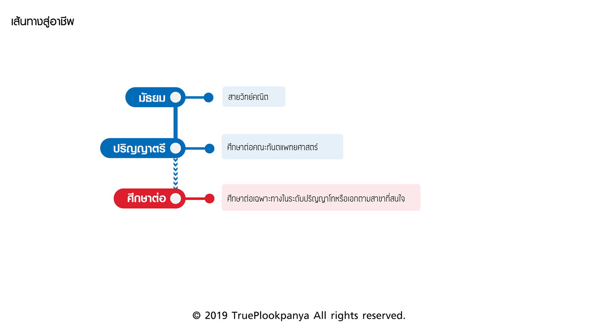

วิธีการที่จะเป็นหมอฟันได้คือ
1.ต้องมีความตั้งใจที่อยากจะเป็นจริงๆ
2.ช่วง ม.4 - ม.6 ก็ควรจะเตรียมตัว อ่านหนังสือ เตรียมสอบเข้าได้แล้ว
3.ถ้ากลัวเลือด ก็สามารถเรียนคณะนี้ได้ (ทันตแพทย์ศาสตร์) แต่อาจจะเรียนยากหน่อย ต้องใช้ความพยายามมากๆ
4.หมั่นทบทวน อ่านหนังสือ และคำศัพท์เกี่ยวกับทันตแพทย์
* เสริม * คำศัพท์ทันตแพทย์
-
Scale/Scaling = ขูดหินปูน
-
Impact = ฟันคุด คือ ฟันที่ยังไม่โผล่ขึ้นมาจากเหงือก
-
Filling = อุดฟัน
-
Suction = ดูดน้ำลาย
-
Mesial = บริเวณด้านใกล้กลางฟัน
-
Distal = บริเวณด้านไกลกลางฟัน
-
เลื่อนนัด คือ คนไข้ปรับเปลี่ยนวันที่นัดเข้าพบกับทันตแพทย์
-
มิลลิเมตร คือ หน่วยความละเอียดในการทำฟันที่ทันตแพทย์ทุกคนจะต้องเจอ ส่วนมากจะอยู่ในช่วง 0-2 มม.
|
แผนการเรียน

ในระดับมัธยมศึกษาตอนปลายหากจบจากสายวิทย์คณิตจะยิ่งได้เปรียบ ต้องเป็นคนขยัน ทำเกรดเฉลี่ยได้้ดี ชอบที่จะเรียนรู้และมีหัวด้านการเรียนคณิตศาสตร์ วิทยาศาสตร์ เคมี ชีวะ ฟิสิกส์ ฯลฯ เพราะต้องใช้ในการสอบเข้าคณะทันตแพทยศาสตร์ ซึ่งเปิดสอนในหลายมหาวิทยาลัยฯ ดังนี้
- คณะทันตแพทยศาสตร์ มหาวิทยาลัยมหิดล
- คณะทันตแพทยศาสตร์ มหาวิทยาลัยสงขลานครินทร์
- คณะทันตแพทยศาสตร์ จุฬาลงกรณ์มหาวิทยาลัย
- คณะทันตแพทยศาสตร์ มหาวิทยาลัยขอนแก่น
- คณะทันตแพทยศาสตร์ มหาวิทยาลัยเชียงใหม่
- คณะทันตแพทยศาสตร์ มหาวิทยาลัยธรรมศาสตร์
- คณะทันตแพทยศาสตร์ มหาวิทยาลัยแม่ฟ้าหลวง
- คณะทันตแพทยศาสตร์ มหาวิทยาลัยรังสิต
- คณะทันตแพทยศาสตร์ มหาวิทยาลัยศรีนครินทรวิโรฒ
- คณะทันตแพทยศาสตร์ มหาวิทยาลัยนเรศวร
- คณะทันตแพทยศาสตร์ มหาวิทยาลัยเทคโนโลยีสุรนารี
- คณะทันตแพทยศาสตร์ มหาวิทยาลัยเวสเทิร์น
- คณะทันตแพทยศาสตร์ มหาวิทยาลัยวลัยลักษณ์ (หลักสูตรนานาชาติ)
|